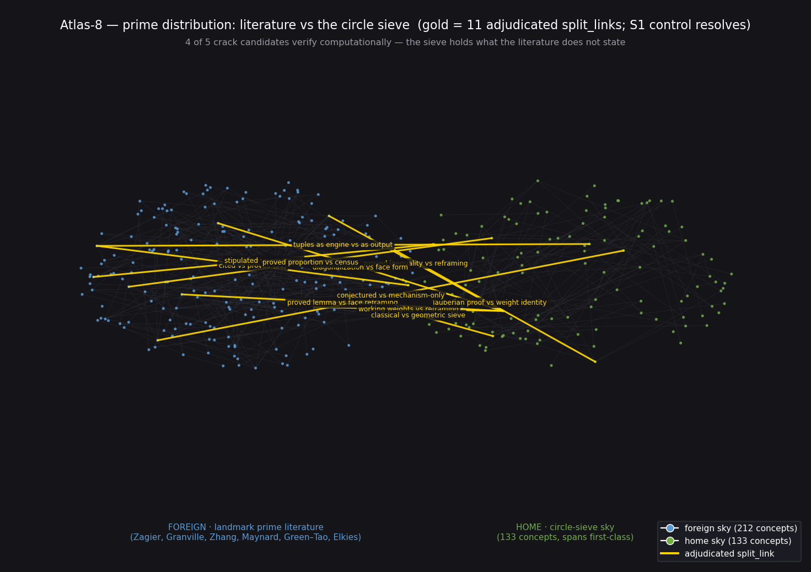

Landmark prime-distribution literature (foreign sky, 212 concepts) vs the pilot's circle-sieve sky (home, 133 concepts, spans first-class). 4 of 5 crack candidates verify computationally.

| Crack | What the literature does not state | Label | Verification |
|---|---|---|---|
| K8-1 PNT as total weight 1 | PNT as the identity Σw(S)→1 on the weighted infinite complex (framing) | computationally_verified | ✅ verified |
| K8-2 Admissibility emergent | Admissible constellations as sieve output; the obstruction ({0,2,4} dies) emerges uninserted | computationally_verified | ✅ verified |
| K8-3 Twin series as sieve weight | 2C₂ derived as renormalized total weight of the deformed sieve (the asymptotic stays unclaimed) | computationally_verified | ✅ verified |
| K8-4 Circle sieve independent | A geometric sieve built without the literature, checked against Eratosthenes | exact | ✅ verified |
| K8-5 Selberg λ² face form | Face-native quadratic-form reframing (source truncated) | heuristic | ❓ undecidable |
Full four-field records + verification scripts/outputs: CRACK_LIST.md, verification/
| ID | Verdict | Pair | Role difference / reason |
|---|---|---|---|
| A8-01 | split_link (S1 control) | Maynard cites Zhang [9] ↔ Zhang Theorem 1 | cited breakthrough vs proved theorem — control resolves |
| A8-02 | split_link | Elkies diagonalization lemma ↔ home λ² face form | proved classical lemma vs face-native reframing |
| A8-03 | split_link | Selberg's inequality ↔ home λ² face form | proved upper bound vs method reframing |
| A8-04 | split_link | Maynard k-dim Selberg weights ↔ home λ² face form | working engine vs structural reframing |
| A8-05 | split_link | Maynard Lemma 5.1 diagonal y-form ↔ home λ² face form | analytic evaluation vs geometric reframing |
| A8-06 | split_link | Zagier/Newman PNT ↔ home D4 weight identity | Tauberian proof vs combinatorial identity |
| A8-07 | rejected | HL 1923 (APs) ↔ home HL twin constant | different HL conjectures; shared name only |
| A8-08 | rejected | Brun's theorem ↔ home twin-density boundary | different claims about twins |
| A8-09 | split_link | Zhang Theorem 1 ↔ home k-tuple combos | tuples as theorem-engine vs as exhibited output |
| A8-10 | split_link | Maynard admissibility def ↔ home emergent obstruction | stipulated input vs emergent output |
| A8-11 | split_link | k-tuples conjecture ↔ home twin-density honest boundary | conjectured vs mechanism-without-claim |
| A8-12 | split_link | Maynard Theorem 1.2 ↔ home k-tuple sweep | proved proportion vs exhibited census |
| A8-13 | split_link | Elkies sieve setup ↔ home circle sieve | classical divisibility vs geometric shared-boundary sifting |
Full records: ATLAS8_REPORT.md · atlas8_adjudications.json ·
grading_packet.md · graphs/atlas8_raw.json · candidates.json